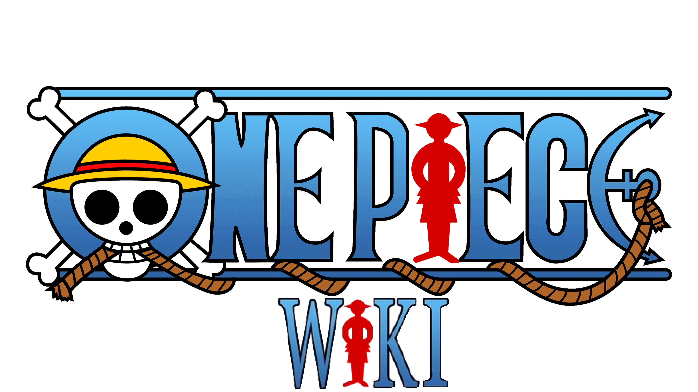

Edith Kamerman Aguilar
Video Game Developer
Isao's Journey
Accompany Isao on an intrepid adventure and lend him a hand by helping those most in need. Video game developed with colleagues for Doctors Without Borders

One Piece Wiki
Check information about your favorite show such as the characters, crews and arcs. You'll be able to keep your favorites one

Foxy The Pirate - 3D Model
3D model of Foxy the pirate, character from the Five Nights at Freddy's saga

Rocktite - 3D Model
3D model of Rocktite, character from The Legend of Zelda: Spirits Tracks